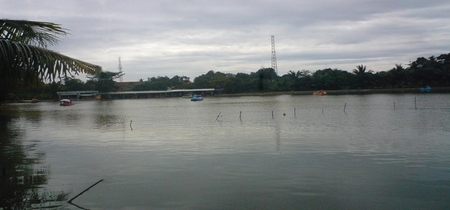
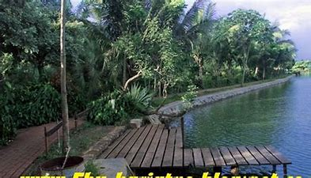

Situ Pengasinan
Situ Pengasinan berada di Kelurahan Pengasinan, Sawangan, Depok. Letaknya persis berada di Jalan Utomo No. 19-22, Kelurahan Pengasinan, Sawangan, Kota Depok. Berdiri di atas tanah seluas 6 hektar dan dikelilingi pepohonan yang rindang, Situ Pengasinan menjadi pilihan keluarga untuk berlibur di akhir pekan. Dengan latar belakang Gunung Salak, Situ Pengasinan menjanjikan suasana yang asri dan sejuk serta pemandangan alam yang memanjakan mata.
Apabila melalui Jalan Raya Bogor, pertigaan Bojong Sari Sawangan ke pertigaan Pengasinan berjarak 2 km. Apabila datang dengan kendaraan umum, turun di Stasiun Depok dan lanjutkan perjalanan dengan angkutan umum D03 tujuan Depok – Parung turun di pertigaan Pengasinan dan lanjutkan perjalanan dengan ojek. Apabila datang dari Ciputat, naik angkutan umum jurusan Lebak Bulus – Parung turun di pertigaan Bojongsari Sawangan lanjutkan hingga pertigaan Pengasinan.
Sebagai sebuah wisata air yang menjadi favorit destinasi warga kota Depok dan sekitarnya, wisata Situ Pengasinan memanjakan pengunjungnya dengan menyediakan beberapa fasilitas di area Situ Pengasinan. Fasilitas-fasilitas yang disediakan bisa dinikmati pengunjung untuk mengelilingi Situ Pengasinan bersama keluarga atau teman-teman sambil menikmati kesejukan udaranya dan pemandangan alam yang menjadi daya tarik pengunjung untuk datang.
Fasilitas
Ini beberapa fasilitas yang dimiliki oleh Situ Pengasinan
- Perahu Bebek
- Perahu Naga
- Tempat Pemancingan
- Tempat Parkir
- Taman